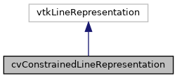

|
ACloudViewer
3.9.4
A Modern Library for 3D Data Processing
|
|
ACloudViewer
3.9.4
A Modern Library for 3D Data Processing
|
Extended LineRepresentation with distance display and ruler features. More...
#include <cvConstrainedLineRepresentation.h>


Public Member Functions | |
| vtkTypeMacro (cvConstrainedLineRepresentation, vtkLineRepresentation) | |
| void | PrintSelf (ostream &os, vtkIndent indent) override |
| virtual double | GetDistance () |
| Get distance between the two points. More... | |
| vtkSetMacro (RulerMode, vtkTypeBool) | |
| Set/Get Ruler mode Ruler mode displays tick marks. More... | |
| vtkGetMacro (RulerMode, vtkTypeBool) | |
| vtkBooleanMacro (RulerMode, vtkTypeBool) | |
| vtkSetClampMacro (RulerDistance, double, 0, VTK_FLOAT_MAX) | |
| Set/Get Ruler distance (tick spacing) More... | |
| vtkGetMacro (RulerDistance, double) | |
| vtkSetClampMacro (NumberOfRulerTicks, int, 1, VTK_INT_MAX) | |
| Set/Get number of ruler ticks. More... | |
| vtkGetMacro (NumberOfRulerTicks, int) | |
| void | SetScale (double scale) |
| Set/Get scale factor. More... | |
| vtkGetMacro (Scale, double) | |
| vtkSetStringMacro (LabelFormat) | |
| Set/Get distance label format. More... | |
| vtkGetStringMacro (LabelFormat) | |
| vtkSetStringMacro (LabelSuffix) | |
| Set/Get distance label suffix (e.g., " #1", " #2") More... | |
| vtkGetStringMacro (LabelSuffix) | |
| vtkSetMacro (ShowLabel, vtkTypeBool) | |
| Show/Hide distance label. More... | |
| vtkGetMacro (ShowLabel, vtkTypeBool) | |
| vtkBooleanMacro (ShowLabel, vtkTypeBool) | |
| vtkGetObjectMacro (AxisActor, vtkAxisActor2D) | |
| Get Axis Actor (for tick display) More... | |
| vtkGetObjectMacro (AxisProperty, vtkProperty2D) | |
| Get axis property (ParaView way) More... | |
| void | BuildRepresentation () override |
| Override BuildRepresentation to update distance display. More... | |
| int | RenderOverlay (vtkViewport *viewport) override |
| Override to render distance label and ticks. More... | |
| int | RenderOpaqueGeometry (vtkViewport *viewport) override |
| template<typename T > | |
| void | ReplaceHandleRepresentationsTyped () |
| Replace handle representations with custom types This is needed because vtkLineRepresentation's constructor calls InstantiateHandleRepresentation() before we can set custom handles. More... | |
| void | ReplaceHandleRepresentations (vtkPointHandleRepresentation3D *handle) |
| Replace handle representations with custom types (runtime version) More... | |
Static Public Member Functions | |
| static cvConstrainedLineRepresentation * | New () |
Protected Member Functions | |
| cvConstrainedLineRepresentation () | |
| ~cvConstrainedLineRepresentation () override | |
Protected Attributes | |
| vtkTypeBool | ShowLabel |
| char * | LabelFormat |
| char * | LabelSuffix |
| vtkTypeBool | RulerMode |
| double | RulerDistance |
| int | NumberOfRulerTicks |
| vtkAxisActor2D * | AxisActor |
| vtkProperty2D * | AxisProperty |
| double | Scale |
| double | Distance |
Extended LineRepresentation with distance display and ruler features.
Combines the advantages of both:
This allows us to have simultaneously:
Definition at line 30 of file cvConstrainedLineRepresentation.h.
|
protected |
Definition at line 30 of file cvConstrainedLineRepresentation.cpp.
References AxisActor, and AxisProperty.
|
overrideprotected |
Definition at line 86 of file cvConstrainedLineRepresentation.cpp.
References AxisActor, AxisProperty, LabelFormat, and LabelSuffix.
|
override |
Override BuildRepresentation to update distance display.
Definition at line 119 of file cvConstrainedLineRepresentation.cpp.
References AxisActor, Distance, LabelFormat, LabelSuffix, NumberOfRulerTicks, RulerDistance, RulerMode, Scale, and ShowLabel.
Referenced by RenderOpaqueGeometry(), and RenderOverlay().
|
virtual |
Get distance between the two points.
Definition at line 103 of file cvConstrainedLineRepresentation.cpp.
|
static |
|
override |
Definition at line 277 of file cvConstrainedLineRepresentation.cpp.
References LabelFormat, NumberOfRulerTicks, RulerDistance, RulerMode, Scale, and ShowLabel.
|
override |
Definition at line 193 of file cvConstrainedLineRepresentation.cpp.
References AxisActor, BuildRepresentation(), and count.
|
override |
Override to render distance label and ticks.
Definition at line 179 of file cvConstrainedLineRepresentation.cpp.
References AxisActor, BuildRepresentation(), and count.
| void cvConstrainedLineRepresentation::ReplaceHandleRepresentations | ( | vtkPointHandleRepresentation3D * | handle | ) |
Replace handle representations with custom types (runtime version)
Definition at line 209 of file cvConstrainedLineRepresentation.cpp.
|
inline |
Replace handle representations with custom types This is needed because vtkLineRepresentation's constructor calls InstantiateHandleRepresentation() before we can set custom handles.
Template version for type-safe creation
Definition at line 115 of file cvConstrainedLineRepresentation.h.
| void cvConstrainedLineRepresentation::SetScale | ( | double | scale | ) |
Set/Get scale factor.
Definition at line 111 of file cvConstrainedLineRepresentation.cpp.
References Scale.
| cvConstrainedLineRepresentation::vtkBooleanMacro | ( | RulerMode | , |
| vtkTypeBool | |||
| ) |
| cvConstrainedLineRepresentation::vtkBooleanMacro | ( | ShowLabel | , |
| vtkTypeBool | |||
| ) |
| cvConstrainedLineRepresentation::vtkGetMacro | ( | NumberOfRulerTicks | , |
| int | |||
| ) |
| cvConstrainedLineRepresentation::vtkGetMacro | ( | RulerDistance | , |
| double | |||
| ) |
| cvConstrainedLineRepresentation::vtkGetMacro | ( | RulerMode | , |
| vtkTypeBool | |||
| ) |
| cvConstrainedLineRepresentation::vtkGetMacro | ( | Scale | , |
| double | |||
| ) |
| cvConstrainedLineRepresentation::vtkGetMacro | ( | ShowLabel | , |
| vtkTypeBool | |||
| ) |
| cvConstrainedLineRepresentation::vtkGetObjectMacro | ( | AxisActor | , |
| vtkAxisActor2D | |||
| ) |
Get Axis Actor (for tick display)
| cvConstrainedLineRepresentation::vtkGetObjectMacro | ( | AxisProperty | , |
| vtkProperty2D | |||
| ) |
Get axis property (ParaView way)
| cvConstrainedLineRepresentation::vtkGetStringMacro | ( | LabelFormat | ) |
| cvConstrainedLineRepresentation::vtkGetStringMacro | ( | LabelSuffix | ) |
| cvConstrainedLineRepresentation::vtkSetClampMacro | ( | NumberOfRulerTicks | , |
| int | , | ||
| 1 | , | ||
| VTK_INT_MAX | |||
| ) |
Set/Get number of ruler ticks.
| cvConstrainedLineRepresentation::vtkSetClampMacro | ( | RulerDistance | , |
| double | , | ||
| 0 | , | ||
| VTK_FLOAT_MAX | |||
| ) |
Set/Get Ruler distance (tick spacing)
| cvConstrainedLineRepresentation::vtkSetMacro | ( | RulerMode | , |
| vtkTypeBool | |||
| ) |
Set/Get Ruler mode Ruler mode displays tick marks.
| cvConstrainedLineRepresentation::vtkSetMacro | ( | ShowLabel | , |
| vtkTypeBool | |||
| ) |
Show/Hide distance label.
| cvConstrainedLineRepresentation::vtkSetStringMacro | ( | LabelFormat | ) |
Set/Get distance label format.
| cvConstrainedLineRepresentation::vtkSetStringMacro | ( | LabelSuffix | ) |
Set/Get distance label suffix (e.g., " #1", " #2")
| cvConstrainedLineRepresentation::vtkTypeMacro | ( | cvConstrainedLineRepresentation | , |
| vtkLineRepresentation | |||
| ) |
|
protected |
Definition at line 174 of file cvConstrainedLineRepresentation.h.
Referenced by BuildRepresentation(), cvConstrainedLineRepresentation(), RenderOpaqueGeometry(), RenderOverlay(), and ~cvConstrainedLineRepresentation().
|
protected |
Definition at line 175 of file cvConstrainedLineRepresentation.h.
Referenced by cvConstrainedLineRepresentation(), and ~cvConstrainedLineRepresentation().
|
protected |
Definition at line 177 of file cvConstrainedLineRepresentation.h.
Referenced by BuildRepresentation().
|
protected |
Definition at line 167 of file cvConstrainedLineRepresentation.h.
Referenced by BuildRepresentation(), PrintSelf(), and ~cvConstrainedLineRepresentation().
|
protected |
Definition at line 168 of file cvConstrainedLineRepresentation.h.
Referenced by BuildRepresentation(), and ~cvConstrainedLineRepresentation().
|
protected |
Definition at line 173 of file cvConstrainedLineRepresentation.h.
Referenced by BuildRepresentation(), and PrintSelf().
|
protected |
Definition at line 172 of file cvConstrainedLineRepresentation.h.
Referenced by BuildRepresentation(), and PrintSelf().
|
protected |
Definition at line 171 of file cvConstrainedLineRepresentation.h.
Referenced by BuildRepresentation(), and PrintSelf().
|
protected |
Definition at line 176 of file cvConstrainedLineRepresentation.h.
Referenced by BuildRepresentation(), PrintSelf(), and SetScale().
|
protected |
Definition at line 166 of file cvConstrainedLineRepresentation.h.
Referenced by BuildRepresentation(), and PrintSelf().